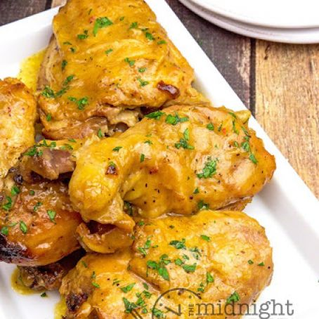

Golden chicken

Description
This chicken dish combines elements from three of my favorite chicken recipes: chicken curry, chicken tagine, and a Creole-style smothered chicken. The braising liquid is rich and delicious, getting its yellow golden color from turmeric and saffron and its intense flavor from a low-and-slow simmer. Serve over buttery mashed potatoes, rice, or noodles. Ladle the sauce over top, and garnish with sliced green onions and minced jalapeños.
Ingredients
- 4 (12 ounce) chicken leg quarters
- 2 teaspoons kosher salt, plus more to taste
- 1 tablespoon olive oil
- 1 cup diced onion
- ½ cup diced celery
- ½ cup diced jalapeño pepper
- ½ cup diced jalapeño pepper
- 1 teaspoon smoked paprika
- ¼ teaspoon ground coriander
- ¼ teaspoon ground turmeric
- ½ teaspoon freshly ground black pepper
- ⅛ teaspoon cayenne pepper
- ⅛ teaspoon ground cinnamon
- 3 cloves garlic, crushed
- 1 tablespoon tomato paste
- 3 tablespoons white wine vinegar
- 2½ cups cold water
- 1 teaspoon saffron threads, crushed
- 1 teaspoon dried currants
- 1 teaspoon chicken bouillon base
Steps
- Place chicken leg quarters on a work surface with the skin facing up. Make a cut into the thickest part of each drumstick, all the way down to the bone. Then make two cuts, about 1 inch apart, right in the center of each thigh. Season both sides generously with 2 teaspoons kosher salt.
- Heat oil in a large skillet over high heat. Add chicken, skin-side down, and sear until skin is nicely browned, 5 to 6 minutes. Flip and sear for 2 more minutes. Turn off the heat and remove chicken to a plate, leaving any rendered fat in the skillet.
- Turn the heat back on to medium; add onion, celery, jalapeño, and a pinch of salt to the skillet. Sauté until onion turns translucent and veggies have softened, 5 to 7 minutes. Add cumin, paprika, coriander, turmeric, pepper, cayenne, cinnamon, and garlic; cook and stir until garlic has cooked a bit and spices are toasted, about 2 minutes.
- Stir in tomato paste, vinegar, water, and saffron. Increase heat to high and stir in currants and chicken base; bring to a simmer.
- Add chicken to the skillet, skin-side up, and reduce heat to low. Baste chicken with the liquid. Cover and cook over low or medium-low heat at a gentle simmer for 1 hour.
- Flip chicken, cover, and simmer gently until the meat is fork-tender and almost falling off the bone, about 30 more minutes.
- Flip and baste chicken again. Increase heat to medium and cook, uncovered, until chicken is very tender and the braising liquid has reduced a bit, 20 to 30 minutes more.
- Taste the braising liquid and adjust seasoning if needed before serving.